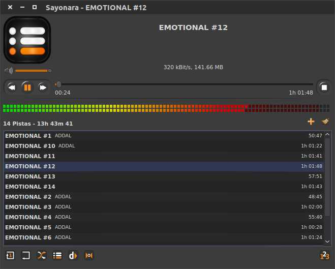

| description: Is a small, clear and fast audio player for Linux written in C++, supported by the Qt framework. It uses Gstreamer as audio backend. url: http://sayonara-player.com license: 'GPL3' depends: qt5-base taglib sqlite gst-plugins-base gst-plugins-good gst-plugins-bad libmtp makedepends: created_at: Wednesday Feb 24, 2016 at 15:26 pushed_at: Monday May 02, 2016 at 07:43 |  |